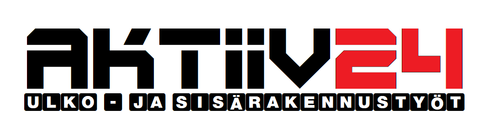
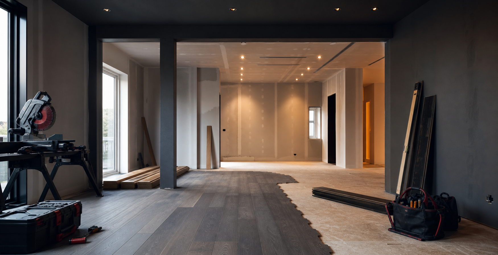
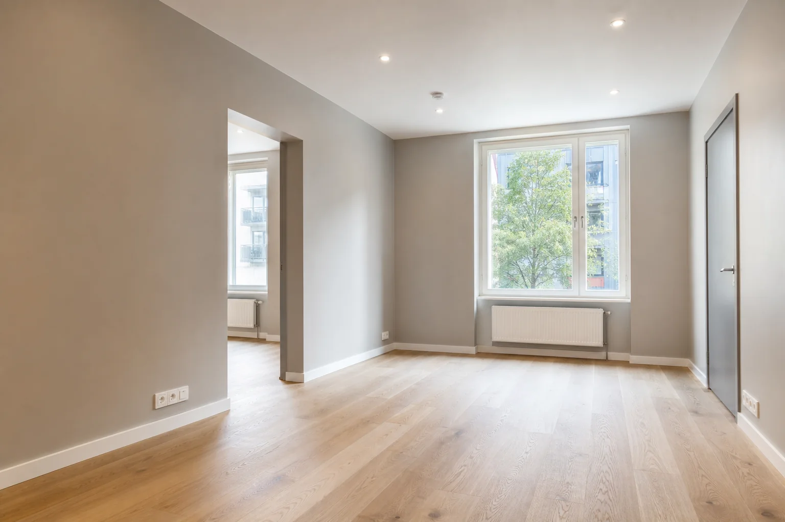
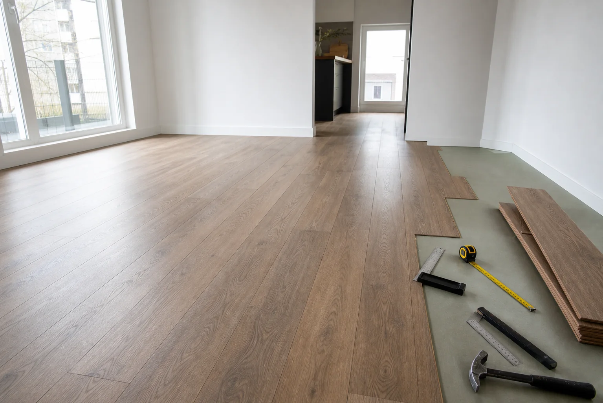
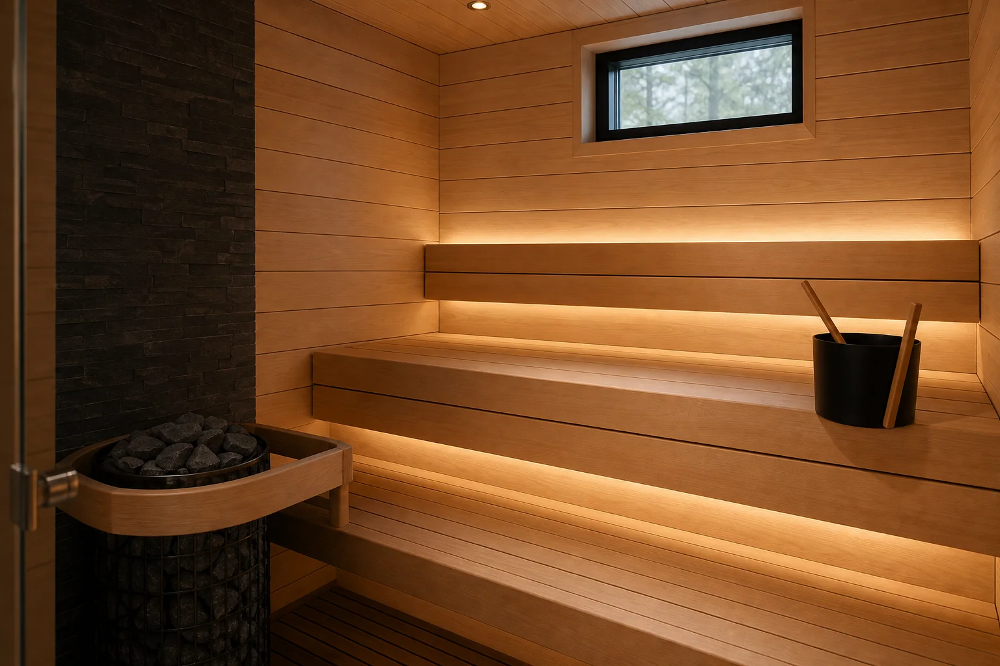
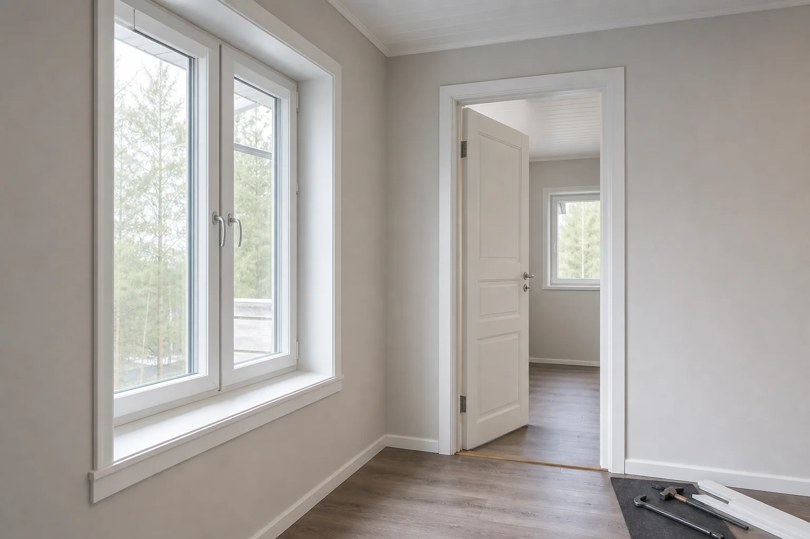
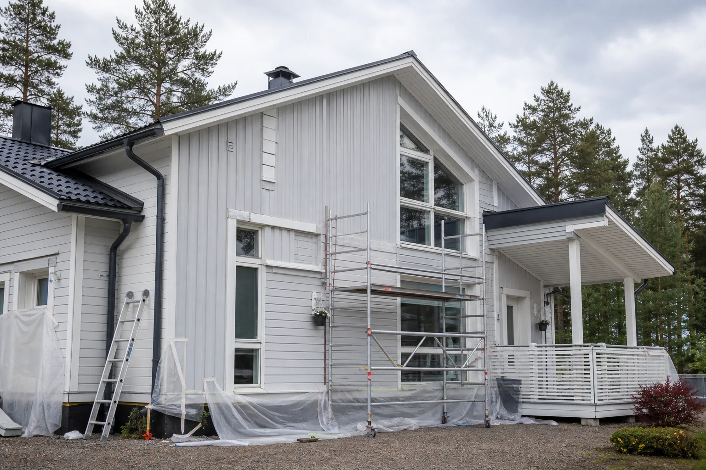
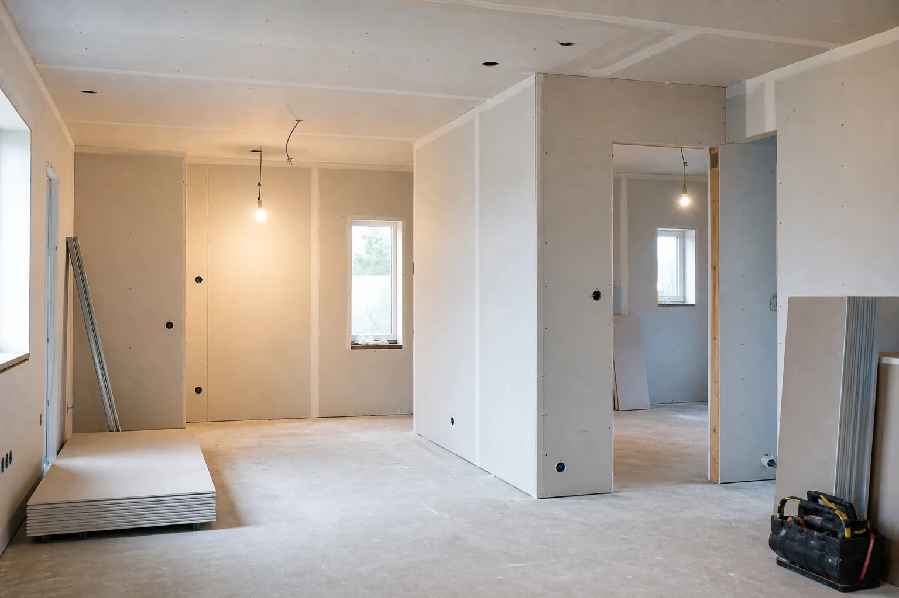
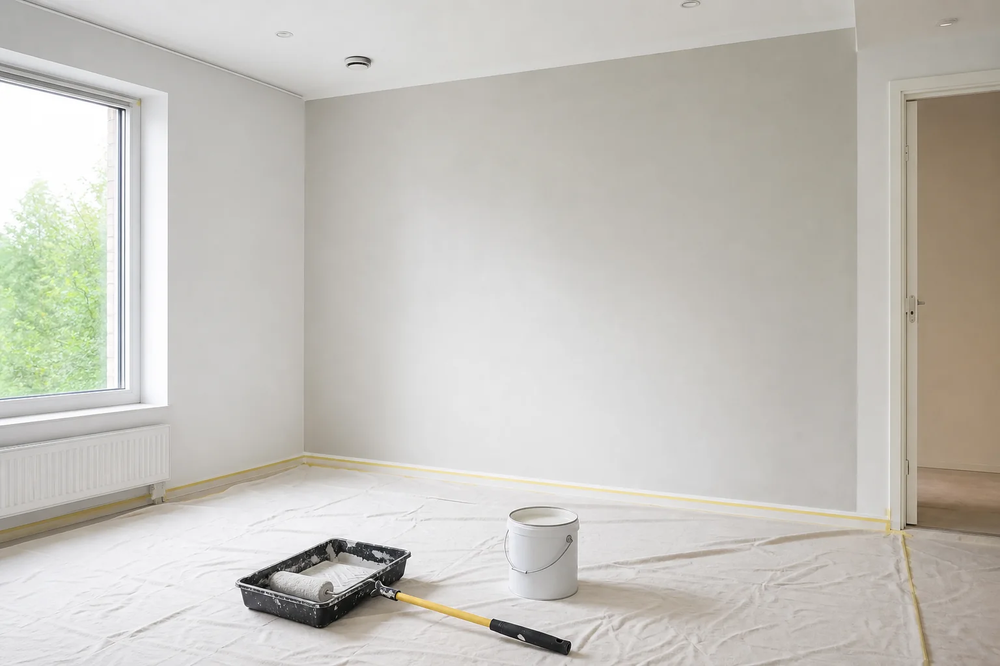
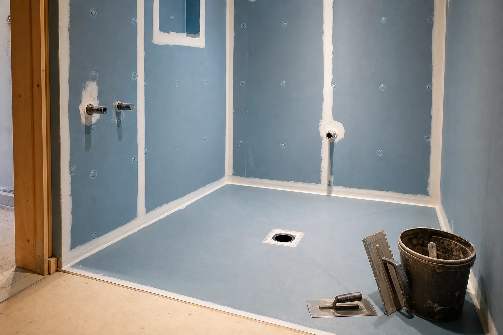

Sisäremontit
Sisäremontti asuntoihin, taloihin ja liiketiloihin: seinät, katot, lattiat, maalaus ja tasoitustyöt, kipsilevytyöt ja väliseinät.
- seinät, katot, lattiat
- maalaus ja tasoitustyöt
- kipsilevytyöt ja väliseinät

Asiakkaan idea · selkeä suunnitelma · siisti toteutus
Rakennus- ja remonttityöt yksityisasiakkaille, taloyhtiöille, yrityksille ja urakoitsijoille. Selkeä työnkulku, siisti toteutus ja valmis lopputulos sovitussa aikataulussa.
Idea kuunnellaan. Työ suunnitellaan. Lopputulos tehdään kunnolla.
Autamme muuttamaan remontti- tai rakennusidean selkeäksi suunnitelmaksi ja valmiiksi työksi — rauhallisesti, rehellisesti ja sovitusti.




AKTIIV24 tekee rakennus- ja remonttitöitä selkeällä toimintatavalla: sovitut työt, siisti toteutus ja valmis lopputulos ilman turhaa säätöä. Palvelemme yksityisasiakkaita, taloyhtiöitä, yrityksiä ja urakoitsijoita eri puolilla Suomea.
Asiakkaan idea
Jokaisella asiakkaalla on oma ajatus siitä, miltä lopputuloksen pitäisi näyttää ja miten tilan pitäisi toimia. Meille hyvä työ alkaa siitä, että ymmärrämme asiakkaan tarpeen, kohteen tilanteen ja työn tavoitteen.
Emme tyrkytä valmista ratkaisua väkisin. Käymme idean läpi, ehdotamme käytännöllisiä vaihtoehtoja ja toteutamme työn sovitulla tavalla.
Luottamus
Kuuntelemme asiakkaan ideaa
Käymme ensin läpi, mitä asiakas haluaa saavuttaa ja mikä kohteessa on tärkeintä.Ehdotamme käytännöllisiä ratkaisuja
Kerromme avoimesti, mikä ratkaisu on järkevä, kestävä ja kustannusten kannalta realistinen.Kunnioitamme kotia ja työmaata
Työ tehdään siististi, järjestelmällisesti ja kohteen arvoa kunnioittaen.Sovimme selkeästi
Työn sisältö, aikataulu ja seuraavat vaiheet käydään läpi ennen toteutusta.Viemme työn loppuun
Tavoitteena on valmis, toimiva ja siisti lopputulos.Yritys
AKTIIV24 tekee rakennus- ja remonttitöitä yksityisasiakkaille, taloyhtiöille, yrityksille ja urakoitsijoille. Työskentelemme sisätilojen, julkisivujen, saunojen, lattioiden, seinien, ovien, ikkunoiden ja muiden rakennustehtävien parissa.
Toimintatapamme on selkeä: ensin ymmärrämme tehtävän, sitten ehdotamme toimivan ratkaisun, teemme työn huolellisesti ja viemme kohteen valmiiksi.
Arvostamme järjestystä, selkeitä sopimuksia ja asiakkaan kohteen kunnioittamista. Hyvä remontti tarkoittaa meille sekä hyvää lopputulosta että rauhallista työprosessia.
Toimimme Uudellamaalla ja tarvittaessa muualla Suomessa: Helsinki, Espoo, Vantaa, Nurmijärvi, Tuusula, Kerava, Järvenpää ja lähialueet.
Palvelut
Teemme selkeitä rakennus- ja remonttitöitä sisäremonteista lattian asennukseen, saunaremontteihin, maalaustöihin, kipsilevy- ja väliseinätöihin, purkutöihin, julkisivutöihin sekä ovien ja ikkunoiden asennukseen.
Sisäremontti asuntoihin, taloihin ja liiketiloihin: seinät, katot, lattiat, maalaus ja tasoitustyöt, kipsilevytyöt ja väliseinät.
Lattian asennus tehdään alustan, materiaalin ja tilan käytön mukaan. Asennamme laminaatin, parketin ja vinyylin sekä viimeistelemme listoitukset.
Saunaremontti ja valmistelutyöt tehdään huolellisesti, jotta tilasta tulee toimiva, siisti ja pitkäikäinen.

Ovien ja ikkunoiden asennus, karmit, listat ja viimeistelytyöt sovitetaan kohteen rakenteisiin ja haluttuun lopputulokseen.

Julkisivutyöt, ulkoverhous, maalaustyöt sekä purku- ja valmistelutyöt toteutetaan sovitun laajuuden mukaan.

Purkutyöt tehdään hallitusti: suojaus, siivous ja materiaalien valmistelu auttavat seuraavia työvaiheita etenemään siististi.
Ideasta toteutukseen
Sinulla ei tarvitse olla valmista suunnitelmaa ennen yhteydenottoa. Riittää, että kerrot mitä haluat muuttaa, korjata tai rakentaa.
Me autamme hahmottamaan, mitä työ käytännössä vaatii, missä järjestyksessä se kannattaa tehdä ja millainen toteutus sopii kohteeseen.
Miksi AKTIIV24
Työ järjestetään niin, ettei seuraava vaihe ala epäselvyyksien korjaamisella.
Muoto, aikataulu, työmäärä ja materiaalit käydään läpi ennen työn alkua.
Teemme erilaisia tehtäviä yksittäisestä työvaiheesta laajempaan remonttiin.
Voimme liittyä projektiin tekijänä tai lisäresurssina.
Portfolio
Kuvat ovat realistisia havainnekuvia AKTIIV24:n palvelualueista ja työn lopputuloksen tyylistä. Toteutuneita kohdekuvia lisätään vain asiakkaiden luvalla.

Seinien maalausPuhtaampi ilme ja huolellinen pinta ilman turhaa sotkua.
MärkätilaHuolellisesti valmisteltu tila seuraavia työvaiheita varten.Prosessi
Lähetä lyhyt kuvaus työstä, kuvat kohteesta ja toivottu aikataulu.
Käymme työn läpi ja tarvittaessa sovimme kohdekäynnin.
Saat selkeän arvion työn sisällöstä, aikataulusta ja kustannuksista.
Työ tehdään sovitun suunnitelman mukaan, siististi ja käytännönläheisesti.
Käymme lopputuloksen läpi ja varmistamme, että sovittu työ on tehty.
Yhteydenoton jälkeen
B2B
AKTIIV24 voi tehdä yksittäisiä rakennus- ja remonttivaiheita yrityksille, urakoitsijoille ja kiinteistöjen omistajille. Voimme liittyä projektiin tietyn työmäärän tekijänä tai lisäresurssina kohteessa.
Tiimi
Jos sinulla on kokemusta, työkalut, vastuullinen asenne ja halu tehdä laadukasta työtä, lähetä tietosi.
Arviot
Asiakkaiden kokemuksia yhteistyöstä, työn selkeydestä ja lopputuloksesta.
Työ eteni sovitusti ja yhteydenpito oli selkeää alusta loppuun. Erityisesti arvostimme sitä, että meidän oma idea käytiin rauhassa läpi ennen toteutusta.
Asiakas, UusimaaLopputulos oli siisti ja käytännöllinen. Työmaa pidettiin järjestyksessä, ja mahdollisista muutoksista kerrottiin ajoissa.
Omakotitalon omistaja, NurmijärviTarvitsimme tekijän, joka pystyy hoitamaan useamman pienen työvaiheen ilman turhaa säätöä. Työ tehtiin rauhallisesti, siististi ja sovitulla tavalla.
Remonttiasiakas, HelsinkiTyöalue
AKTIIV24 palvelee asiakkaita Uudellamaalla ja tarvittaessa muualla Suomessa. Työalueisiin kuuluvat muun muassa Helsinki, Espoo, Vantaa, Nurmijärvi, Tuusula, Kerava, Järvenpää ja lähialueet.
Teemme sisäremontteja, lattiatöitä, saunaremontteja, maalaustöitä, kipsilevy- ja väliseinätöitä, ovien ja ikkunoiden asennuksia sekä julkisivujen korjaus- ja valmistelutöitä.
FAQ
Aloitus riippuu työn laajuudesta, sijainnista ja aikataulusta. Pienet työt voidaan usein sopia joustavasti.
Kyllä. Teemme sekä pieniä korjaus- ja viimeistelytöitä että laajempia remonttikokonaisuuksia.
Kyllä. Lähetä kuvat, kohteen sijainti ja lyhyt kuvaus tarvittavasta työstä.
Pääasiallinen työalueemme on Uusimaa: Helsinki, Espoo, Vantaa, Nurmijärvi, Tuusula, Kerava, Järvenpää ja lähialueet. Työstä riippuen voimme sopia kohteita myös muualla Suomessa.
Kyllä. Palvelemme yksityisasiakkaita, taloyhtiöitä, yrityksiä ja urakoitsijoita.
Tarjouspyyntö
Nopeaa arviota varten lähetä meille kohteen osoite tai kaupunki, lyhyt kuvaus tarvittavasta työstä, muutama kuva nykytilanteesta, toivottu aikataulu sekä tieto siitä, onko materiaalit jo hankittu vai tarvitaanko apua niiden valinnassa.
Kerro meille ideasi. Vastaamme mahdollisimman selkeästi ja autamme arvioimaan, miten työ kannattaa toteuttaa.
Yhteystiedot
Kuvaile työ, liitä mukaan kuvia kohteesta ja kerro toivottu aikataulu. AKTIIV24 ilmoittaa avoimesti yhteys- ja rekisteritiedot, jotta asiakkaalle on selvää, kenen kanssa hän asioi.
Voit myös soittaa suoraan: 041 749 1334
Tietosuoja
Lomakkeella lähetettyjä tietoja käytetään vain yhteydenottoon ja tarjouspyynnön käsittelyyn. Tietoja ei luovuteta ulkopuolisille ilman erillistä syytä tai asiakkaan lupaa.